Crosshairs
Crosshairs
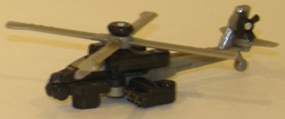 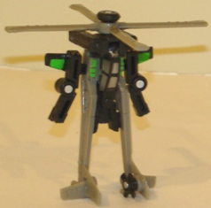
Team : Ground Surveillance Minicon Team
Difficulty of Transformation : Very Easy
Color Scheme : Light milky brownish gray, black, and some silver and bright green
Individual Rating : 4.0
Armada
Series Minicon 10-pack (K-Mart/Secondary Retailer Exclusive)
Allegiances
: Minicon
Size
: Mini-Con
Set Price
: $21-26 U.S., depending
upon retailer
Series:
Armada
Overall Rating
: 5.8
(NOTE: All of the toys in this 10-pack are
repaints of Classics Minicons-- to thus, these reviews are not completely
reviews, and merely cover and changes made to the mold and/or color scheme.
For reviews on the molds themselves, see the reviews of the
Night
Rescue Team
, the
Clear Skies Team
, the
Demolition
Team
, the
Dinobot Team
, and the
Predator
Attack Team
.)
 Crosshairs
Crosshairs
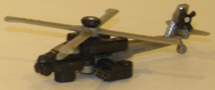
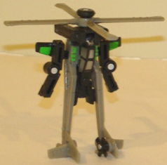
Team
: Ground Surveillance Minicon
Team
Difficulty of Transformation
: Very
Easy
Color Scheme
: Light milky brownish
gray, black, and some silver and bright green
Individual Rating
: 4.0
Crosshairs has more of
a "stealth chopper" look to him, what with the main colors being black
and a light gray. It's a nice color scheme, though without the accent colors
it would look pretty boring. Thankfully, the silver accents on the cockpit
and robot head, and ESPECIALLY the light green paint apps on some parts
of his robot mode, help to make this redeco stand out a bit more among
its mold buddies. I wish there was a bit more of that eye-popping green
used, particulalry on the grey bits, but it still looks pretty cool and
is my favorite out of this mold's various deco jobs.
No mold changes have
been made to Universe 2.0 Crosshairs.
 Longview
Longview
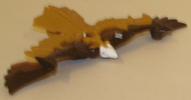
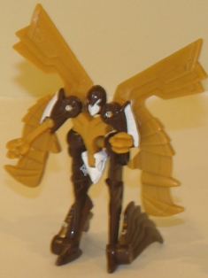
Team
: Ground Surveillance Minicon
Team
Difficulty of Transformation
: Very
Easy
Color Scheme
: Light brown, brown,
dark brown, and some white
Individual Rating
: 8.0
The redeco of this mold
into Longview is rather creative, as he's no longer a turkey vulture but
now a bald eagle. Normally a color scheme consisting of "brown, brown,
and more brown" would look pretty bland, but they way the brown fades from
light in the tail features to dark on the front features is done quite
beautifully for such a small toy. The white on the two different heads
and on the robot shoulders also serves as a nice contrast color to at least
give Longview SOME color besides brown. Definitely more eye-catching than
this mold's previous use as Dreadwing.
No mold changes have
been made to Universe 2.0 Longview.
 Overcharge
Overcharge
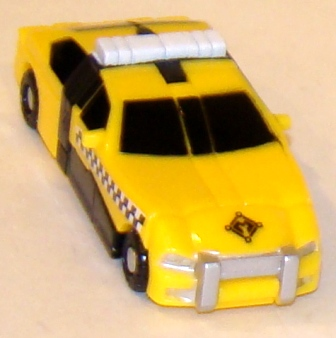
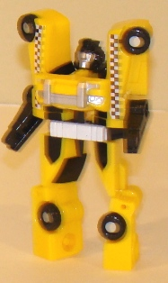
Team
: Battle Support Minicon Team
Difficulty of Transformation
: Easy
Color Scheme
: Yellow, black, and
some silver and white
Individual Rating
: 4.7
Okay, I'm not normally
a fan of the color yellow, but this is not only a yellow redeco, but the
first taxi cab Transformer EVER. And he's named OVERCHARGE. That's worth
at least a few brownie points, right there. There's black helps to offset
the yellow and keep the color scheme from looking too light anyways (and
yes, his windows are painted-- hurrah!). The silver paint apps on the fender
and robot face, as well as the white light bar and taxi-cab checker decals
on the side of the vehicle mode, only accentuate the already brilliant
idea. If you're just going for a version of this toy
purely
based
on the color scheme, get Flatfoot-- but honestly, how can you pass up one
of the most ingenious redecoes ever?
No mold changes have
been made to Universe 2.0 Overcharge.
 Ransack
Ransack
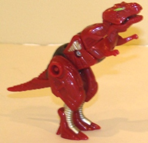
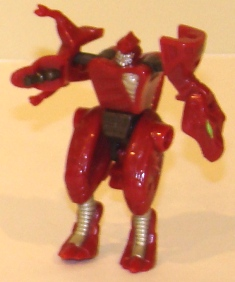
Team
: Battle Support Minicon Team
Difficulty of Transformation
: Very
Easy
Color Scheme
: Dark red and some
silver, bright green, dark metallic gunmetal gray, and dull grayish brown
Individual Rating
: 7.7
Ransack's red really
works well with a tyrannosaurus rex, and the silver paint contrasts nicely
enough with the dark red to give him a bit of a "light" contrast color.
The light green eyes also contrast EXTREMELY well with the green-- in fact,
if more of the silver paint were replaced with light green I think he'd
look even better. The only thing about Ransack's color scheme I'm not 100%
about is the dull brown plastic used for his connecting pieces-- they don't
really contrast much against anything or add anything substantial to the
color scheme, they're just... dull. It still beats this mold's original
colors easily, though.
No mold changes have
been made to Universe 2.0 Ransack.
 Scavenger
Scavenger
 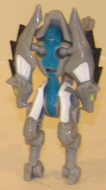
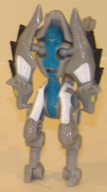
Team
: Ground Surveillance Minicon
Team
Difficulty of Transformation
: Very
Easy
Color Scheme
: Light gray and some
white, black, bright green, silver, and dull aquamarine
Individual Rating
: 6.6
Scavenger's colors as
a gray, white, and black wolf are quite realistic, and fit the figure very
well. However, taken by themselves, they're rather monochrome, and though
they certainly don't clash, they do make the figure look a tad dull. However,
the light green eyes in beast mode at least give a hint of some actual
color on the toy, and in robot mode the toy's colors become positively
gorgeous just by adding dull aquamarine to the robot chest and waist. It
really pops against the fairly bland other colors, not clashing but contrasting
very well. The paint around the head is also detailed much better on this
toy than on this mold's original release as Overbite, so you can really
make out the head mold detailing easier. Even though I think Overbite beats
this guy in terms of how the beast mode looks, Scavenger is leaps and bounds
(pun not intended) above Overbite in terms of the robot mode colors.
No mold changes have
been made to Universe 2.0 Scavenger.
 Sky
Shadow
Sky
Shadow
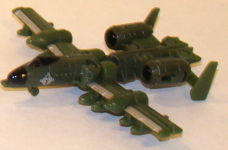
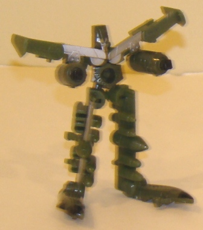
Team
: Battle Support Minicon Team
Difficulty of Transformation
: Very
Easy
Color Scheme
: Dark dull military
green and some silver and black
Individual Rating
: 7.5
As Sky Shadow, this mold
gets done up in colors quite suiting for a military jet-- maybe even MORE
suiting for a military TANK, mind you, but still suiting. The military
green works well as a main color, and the silver and black are very nice
contrast colors that contribute well to a military theme. If this toy was
a bit bigger, I think a camo scheme would have helped to spice it up some,
but given how small and skinny all of Sky Shadow's parts are, that's pretty
difficult to do in this case. However, I think adding a few more black
paint apps to put in a bit more contrast would've helped make him look
just a tad more eye-catching. Overall, I think he beats this mold's release
as
Skyhammer
by a hair, though.
No mold changes have
been made to Universe 2.0 Sky Shadow.
 Snow
Cat
Snow
Cat
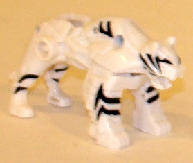
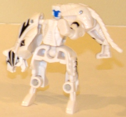
Team
: Ground Surveillance Minicon
Team
Difficulty of Transformation
: Very
Easy
Color Scheme
: White and some black
and dark blue
Individual Rating
: 5.9
Wow, never before has
a re-used name fit a repaint so perfectly... Anyways Snow Cat is pretty
much Classics Snarl in white. No real paint app changes have been made,
except the changing of the face to dark blue (which really looks boss agains
the white, by the by). The black stripe paint apps have stayed and they
look just as good (and fitting) against the white as they did the orange.
So basically I think Snow Cat is about on par with Snarl-- as for which
I'd recommend more, it just depends on which color you like more, orange
or white.
No mold changes have
been made to Universe 2.0 Snow Cat.
 Stockade
Stockade
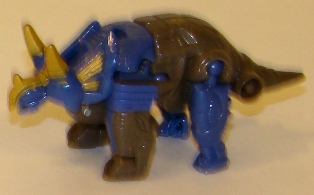
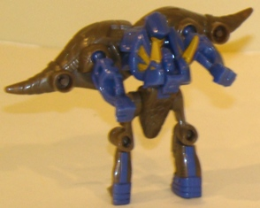
Team
: Battle Support Minicon Team
Difficulty of Transformation
: Easy
Color Scheme
:
Dull grayish brown, dull periwinkle, and some dull goldish yellow
Individual Rating
: 5.1
Stockade's stony brownish
gray works well with a sturdy triceratops, and fits the toy's name to boot.
His dull periwinkle used on his beast mode face and legs is also a nice
color in and of itself, and the goldish yellow works really well as a light
contrast color against it. However... combined, both of the colors really
don't work too well against each other. They don't clash, at least, but
both of Stockade's main colors are so dull his paint scheme doesn't "pop"
enough. Perhaps if more of the yellowish-gold paint apps had been used
or another secondary/accent color had been added things would've been different,
but as it stands it's dull. I think it still beats the rather fleshy-colored
previous version of this mold (Knockdown) by a slim margin, though.
No mold changes have
been made to Universe 2.0 Stockade.
 Treadshot
Treadshot
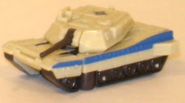
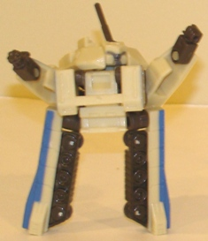
Team
: Ground Surveillance Minicon
Team
Difficulty of Transformation
: Easy
Color Scheme
: Light pale tan, dark
dull greyish brown, and some dark gunmetal gray and dull periwinkle
Individual Rating
: 3.5
Treadshot is redone up
in desert tank colors-- well, sort of. The light tan is a particularly
eye-catching and pretty shade of the color, as a dark contrast color the
gunmetal gray treads and greyish brown plastic pieces work as a nice contrast
color-- though if that was it, the toy would look pretty dull. Thankfully,
Treadshot here has some nice dark periwinkle stripes on the sides of his
tank mode and on spots on his robot arms, and quite frankly it makes all
the difference in the world. I don't know why blue works so well with light
tan for me, but it does, and it keeps Treadshot from having an almost monochrome
color scheme, given his other colors. Overall all I think this is the best
color scheme this mold has received-- unfortunately, well... it's
this
mold
.
No mold changes have
been made to Universe 2.0 Treadshot.
 Windrazor
Windrazor
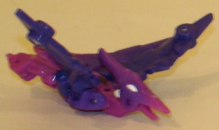
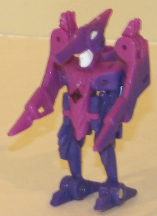
Team
: Battle Support Minicon Team
Difficulty of Transformation
: Very
Easy
Color Scheme
: Pale purple, light
pinkish violet, and some white
Individual Rating
: 4.5
Windrazor is Classics
Swoop done up in decidedly more feminine, Decepticon-y colors, with a pale
purple doing a quite beautiful fade into a pinkish violet near the front
of the beast mode. It works just as well as red for the mold-- heck, we
don't know what colors pterodactyls were-- but the paint fade really makes
Windrazor edge Swoop out in terms of overall eye-catchiness. Unfortunately,
the fade pattern is really all Windrazor has going for (his?) color scheme,
as the only other paint apps on the body are on the pterodactyl eyes and
the robot mode face-- and the optics aren't even painted a different color
on the face, which is a rather noticeable oversight. Speaking purely from
a marketing standpoint, it's also odd why a toy with such a purple-y color
scheme was deemed to be Autobot-allied, considering how purple is so strongly
associated with Decepticons.
No mold changes have
been made to Universe 2.0 Windrazor.
I have mixed feelings on the Armada Minicon 10-pack. On one hand, though it's slightly more expensive per Minicon than the 12-pack, it's still a relatively cheap way to get a bunch of Transformers for relatively little money. Also, the paint deco jobs, without exception, are either better than or at least as good as any previous color schemes used on this mold. However, the Classics Minicon molds are still pretty weak for the most part, and better paint jobs aren't going to change that-- plus, a slightly better selection of molds was used for the 12-pack. If you like Minicons or are a Transfan on a budget, consider this a mildly recommended pick-up; otherwise, some larger, better Transformers are probably more worthy of your money.
Review by Beastbot